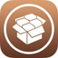

<!doctype html>
<meta charset="utf-8">
<meta name="viewport" content="width=device-width, initial-scale=1">
<title>sqmrakdev</title>
<link rel="icon" href="CydiaIcon.png">
<style>
  :root {
    color-scheme: light dark;
    --tint: #2f6bff; --tint-soft: #759dff; --tint-deep: #1b3e93;
    --bg: #f2f5fb; --card: #ffffff; --ink: #101828; --dim: #6c7a93;
    --line: rgba(16,24,40,0.09);
  }
  body {
    margin: 0; padding: 44px 20px 64px; display: flex; justify-content: center;
    font: 15px/1.55 -apple-system, "Helvetica Neue", Helvetica, Arial, sans-serif;
    background: var(--bg); color: var(--ink);
  }
  main { width: 100%; max-width: 620px; }
  header { display: flex; align-items: center; gap: 15px; margin-bottom: 4px; }
  header img {
    width: 66px; height: 66px; border-radius: 17px; flex: none;
    box-shadow: 0 6px 18px rgba(21,61,150,0.18);
  }
  h1 { font-size: 25px; margin: 0; letter-spacing: -0.4px; }
  .sub { color: var(--dim); margin: 2px 0 0; }
  .url {
    display: block; margin: 22px 0 18px; padding: 13px 15px; border-radius: 13px;
    background: var(--card); border: 1px solid var(--line); color: var(--tint-deep);
    font: 14px ui-monospace, Menlo, monospace; word-break: break-all;
  }
  .add { display: flex; flex-wrap: wrap; gap: 10px; margin-bottom: 12px; }
  .add a {
    flex: 1 1 160px; display: flex; align-items: center; justify-content: center;
    gap: 8px; padding: 13px 14px; border-radius: 14px; text-decoration: none;
    color: #fff; font-weight: 600; letter-spacing: -0.1px;
    background: linear-gradient(135deg, var(--tint-soft), var(--tint));
    box-shadow: 0 5px 14px rgba(21,61,150,0.22);
  }
  .add a:nth-child(2) { background: linear-gradient(135deg, var(--tint), var(--tint-deep)); }
  .add a:nth-child(3) { background: linear-gradient(135deg, var(--tint-deep), #0d1f4d); }
  .add img { width: 24px; height: 24px; flex: none; border-radius: 6px;
             box-shadow: 0 0 0 1px rgba(255,255,255,0.45); }
  h2 { font-size: 13px; text-transform: uppercase; letter-spacing: 0.6px;
       color: var(--dim); margin: 30px 0 10px; font-weight: 600; }
  ul { list-style: none; margin: 0; padding: 0;
       background: var(--card); border: 1px solid var(--line); border-radius: 16px; }
  li { border-bottom: 1px solid var(--line); }
  li:last-child { border-bottom: 0; }
  li a.pkglink {
    display: flex; align-items: center; gap: 13px; padding: 13px 15px;
    text-decoration: none; color: inherit;
  }
  .pkgicon {
    width: 46px; height: 46px; border-radius: 11px; flex: none;
    background: var(--bg); box-shadow: 0 2px 7px rgba(16,24,40,0.12);
  }
  .pkg { font-weight: 600; display: block; }
  .meta { color: var(--dim); font-size: 13px; }
  .ver { color: var(--tint); font-weight: 600; }
  @media (prefers-color-scheme: dark) {
    :root {
      --bg: #0a0e1a; --card: #131a2b; --ink: #eef2fb; --dim: #8c9ab5;
      --line: rgba(255,255,255,0.09);
    }
    .url { color: var(--tint-soft); }
  }
</style>
<main>
  <header>
    
    <div>
      <h1>sqmrakdev</h1>
      <p class="sub">just another shitty repo :D</p>
    </div>
  </header>

  <code class="url">https://sqmrak.github.io/sqmrakdev</code>

  <div class="add">
    <a href="cydia://url/https://cydia.saurik.com/api/share#?source=https://sqmrak.github.io/sqmrakdev/">
      Add to Cydia</a>
    <a href="sileo://source/https://sqmrak.github.io/sqmrakdev/">
      Add to Sileo</a>
    <a href="zbra://sources/add/https://sqmrak.github.io/sqmrakdev/">
      Add to Zebra</a>
  </div>

  <h2>Channels</h2>
  <ul>
    <li><a class="pkglink" href="https://sqmrak.github.io/sqmrakdev/"><span>
      <span class="pkg">stable</span>
      <span class="meta">for everyone &middot; <span class="ver">https://sqmrak.github.io/sqmrakdev</span></span>
    </span></a></li>
    <li><a class="pkglink" href="https://sqmrak.github.io/sqmrakdev/nightly/"><span>
      <span class="pkg">nightly</span>
      <span class="meta">test builds, expect breakage &middot; <span class="ver">https://sqmrak.github.io/sqmrakdev/nightly</span></span>
    </span></a></li>
  </ul>
  <h2>Packages</h2>
  <ul>
    <li><a class="pkglink" href="depictions/com.senko.daemon/"><span><span class="pkg">Senko</span><span class="meta"><span class="ver">2.0.0-stable</span> &middot; vless/amnezia client for iOS 5-15</span></span></a></li>
  </ul>
</main>
